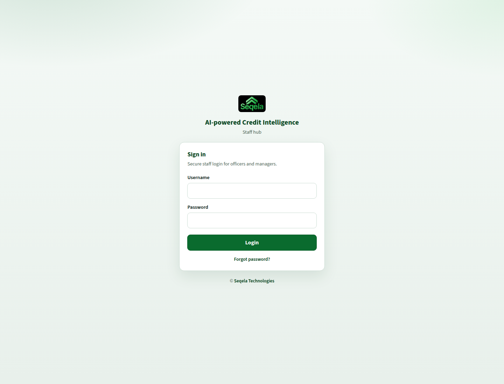
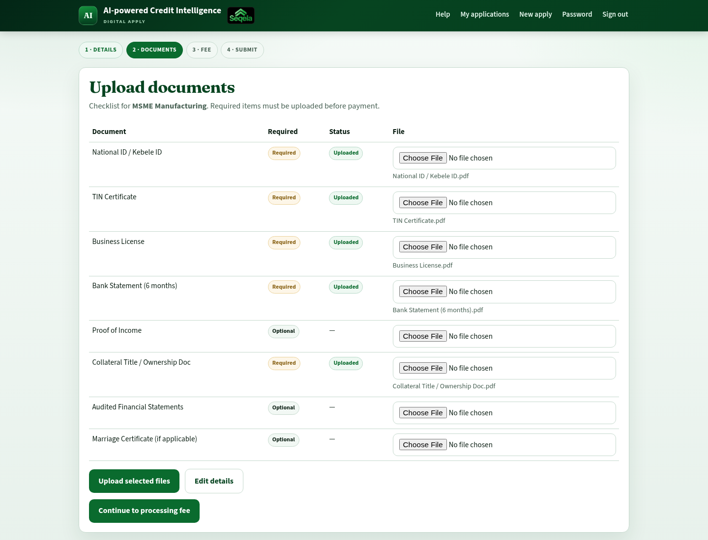
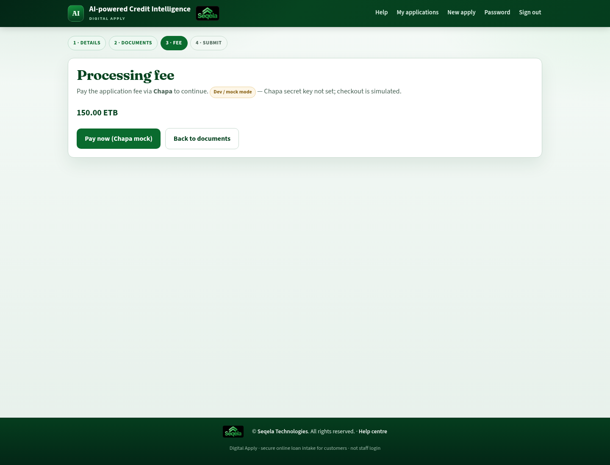
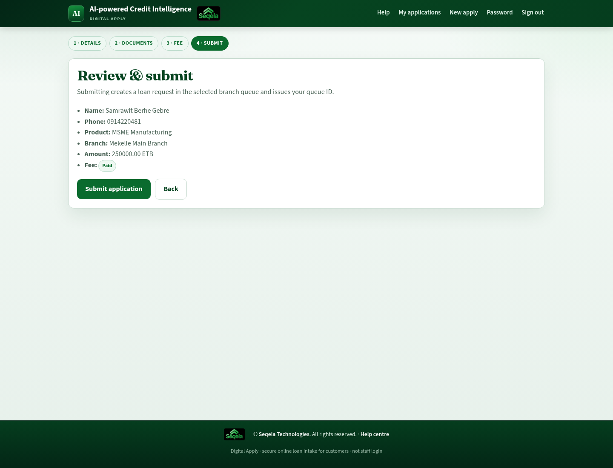
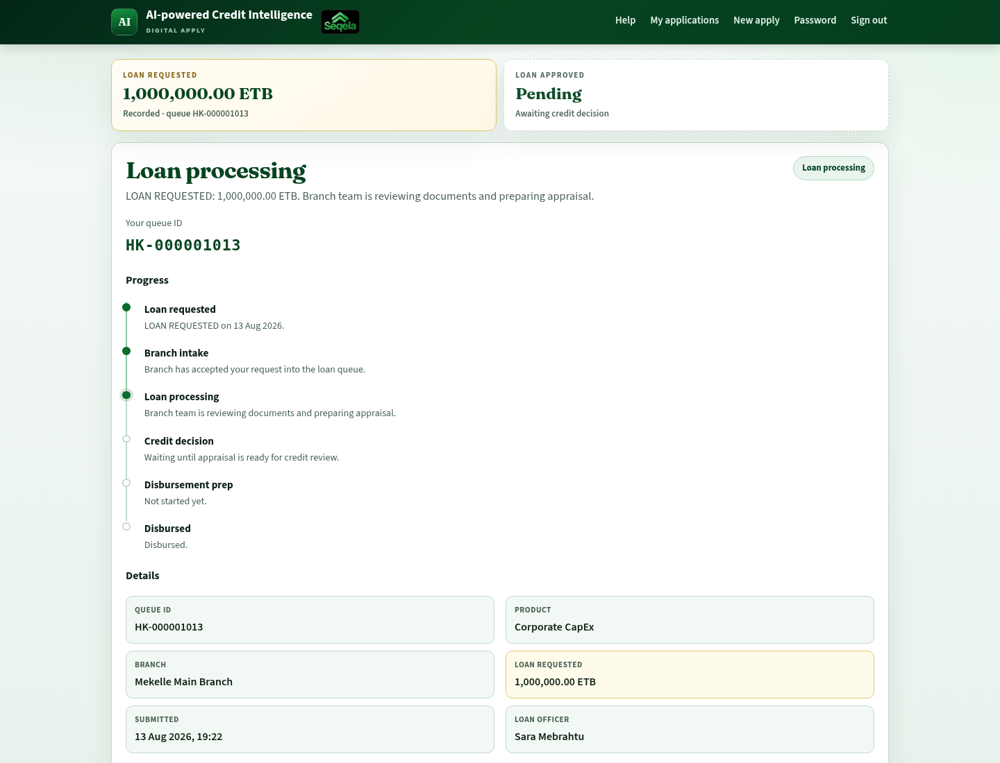
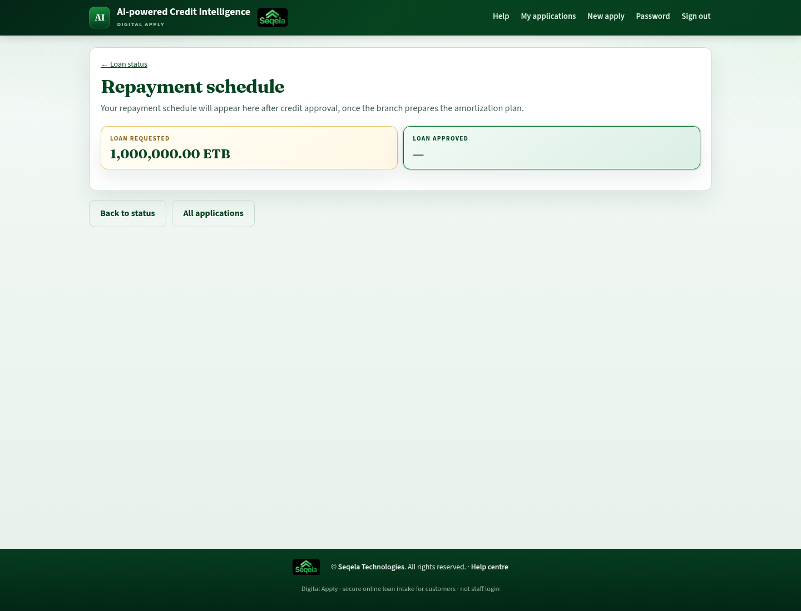
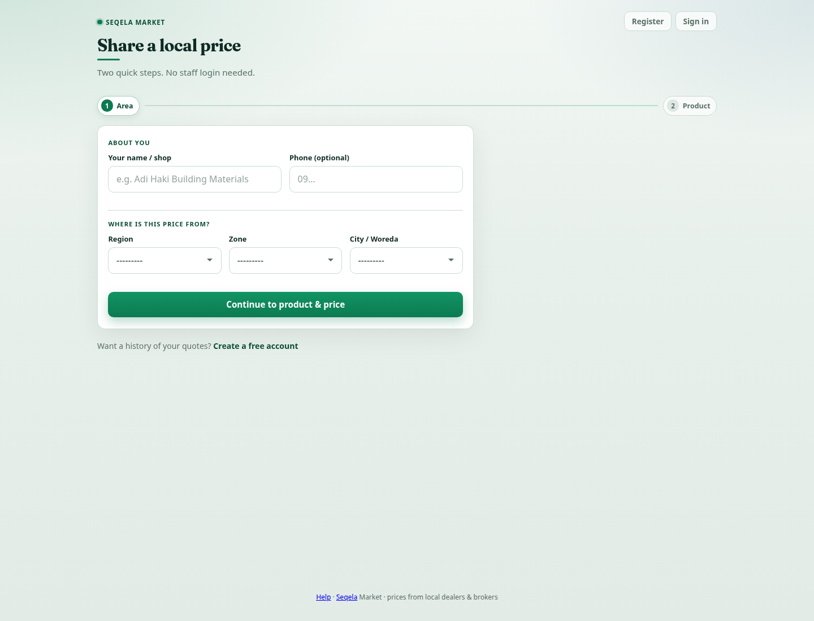

Lockouts / MFA / outages → DECSI IT. Customers → branch with Queue ID. Market actors → DECSI liaison if suspended.
Chapter 02
Admin User Manual
Audience: Super Administrators and System Administrators who configure DECSI Loan Hub.
Entry: Staff hub → /hub/login/ (Django Admin also available at /admin/ for data maintenance).
This guide covers day-to-day configuration and oversight. Operational lending steps are in the Staff manual. Customer-facing steps are in the Customer manual.
1. Your role
Role
What you typically do
Super Administrator (superadmin) / Django superuser
Full Settings menu: geography, users, loan products, document packs, Digital Apply, committees, collateral policy, estimation mode; approve/reject authority delegations
Menus are role-scoped. If you do not see Settings, ask for a superuser account or elevated role. All staff see Delegations in the hub nav.
2. Sign in and security
2.1 Sign in
Open /hub/login/.
Enter your username and password.
If MFA is enabled for your account (or required by policy), open your authenticator app and enter the one-time code at /hub/mfa/verify/.
Screenshot (H-01): Staff login — enter username and password for AI-powered Credit Intelligence.

H-01 — Staff hub login
Screenshot (H-02): MFA verify — enter the one-time code from your authenticator app.
2.2 First-time MFA enrollment
After password login (or from security settings), open MFA setup (/hub/mfa/setup/).
Scan the QR code with an authenticator app (Google Authenticator, Microsoft Authenticator, etc.).
Confirm with a code from the app.
Store recovery practices per DECSI IT policy.
2.3 Password
Need
Where
Forgot password
/hub/password-reset/ (email token — SMTP must be configured)
Change while logged in
/hub/password-change/
2.4 Lockouts
Repeated failed logins can lock an account. Unlock from the user edit screen or the unlock action (allowed for admin / VP IT / superuser). Review related events in the security audit log.
Staff and Digital Apply applicants use separate lockout / auth-event stores. Disabling MFA (if allowed): /hub/mfa/disable/. Sessions may use idle timeout with keepalive (/hub/session/keepalive/).
2.5 Security audit
Roles such as admin, auditor, risk & compliance, VP IT, and superuser can open:
Audit log:/hub/security/audit/
Export:/hub/security/audit/export/ (CSV / Excel)
Use this for investigations (failed logins, MFA events, unlocks).
3. Hub Settings (configuration checklist)
Open the Settings dropdown in the hub navigation (superuser). Configure in roughly this order for a new branch or institution go-live:
Screenshot (H-19): Digital Apply settings — open/close portal, fee, and security controls.
Screenshot (H-20): Document pack — required and optional docs for one loan category.
Location hierarchy used for collateral pricing and market area
Bulk CSV upload options exist for zones, branches, categories, users, and related data where enabled in the UI.
3.2 Users
Open Users from Settings (or manage-users screens).
Create or edit a staff user.
Set:
- Role (branch manager, loan officer, finance manager, etc.)
- Branch and/or district
- Department for HO users when needed
Communicate temporary password and require change on first login if that is your policy.
Encourage or enforce MFA enrollment.
Do not create borrower accounts here — customers register in Digital Apply as applicant accounts.
3.3 Loan categories (products)
Settings → Loan categories
Create/edit products customers and staff select at intake.
Each category drives document pack and appraisal mode (MSME vs corporate, as configured).
Keep names clear for both staff and Digital Apply applicants.
3.4 Document types and packs
Two layers:
Document types & authentication — global catalog of document kinds, OCR/auth rules, reference samples.
Document pack per category — Settings → open a category → Document pack
Mark each type required or optional and set display order.
Digital Apply and staff document screens both use the pack for the selected product. If a category has no pack, the system falls back to the global document catalog (filtered by appraisal mode). After changing packs, test one online draft and one staff loan.
Staff can also Request document on a loan (type from the pack) so the branch manager is notified to upload a missing file.
3.5 Approval committees
Settings → Approval committees
Define who votes at each level.
Align members with amount thresholds and tie-breaker rules used by your credit policy.
Credit Department Head and admins typically maintain this.
3.6 Collateral configuration
Screen
Purpose
Collateral types
Types available on requests
Collateral field-work policy
Field visit / evidence rules
Estimation config(superadmin)
Whether loan officers, engineering, or both value collateral
Unlock queue
Approve unlocks when a locked valuation must be corrected
Catalog / unit prices
Maintained mainly by engineering roles; admins oversee consistency
3.7 Digital Apply
Settings → Digital apply (superuser)
Typical controls:
Control
Effect
Portal open / closed
When closed, applicants see “Digital apply is temporarily closed”
Processing fee (ETB)
Amount charged before submit; 0 ETB auto-waives payment
Password rules
Length and character requirements for applicant passwords
Max failed logins / lockout minutes
Applicant account lockout
Register rate limit (per IP / hour)
Limits new registrations from one IP
Idle session minutes
Applicant session timeout
Require terms acceptance
Checkbox at registration (terms wording is fixed in the UI)
Require CBS customer lookup
Validates customer number against core banking when enabled
Chapa status
Live vs mock/demo payment mode (environment-driven; shown for operators)
After go-live, use Online loan intake to confirm applications appear for branch staff.
3.8 Authority delegation (approve as admin)
Staff can request a colleague to cover selected powers (Delegations in the hub nav → /hub/delegations/).
A staff user creates a request (principal, delegate, scopes, date window, reason).
Status stays Pending until an admin / superadminApproves or Rejects.
While approved and inside the window, the delegate may act; actions are audited as acted by delegate for principal.
Principal or admin can Revoke early.
Scopes that can be delegated (only powers the principal already holds):
Committee voting
Cooperative intake approval
Loan officer appraisal / documents
Finance disbursement approval
Assign loan officer
Admins see a banner when requests await approval.
Screenshot (H-23): Delegations — pending approval list and Approve / Reject actions.
4. Day-to-day admin tasks
4.1 Open or close Digital Apply
Settings → Digital apply.
Toggle portal availability.
Notify branches before closing (applicants cannot finish new submissions).
4.2 Adjust processing fee
Settings → Digital apply.
Update fee in ETB.
Confirm a test payment in mock mode (if available) before relying on live Chapa.
4.3 Add a new loan product
Create Loan category.
Attach Document pack (required/optional docs).
Ensure committees and appraisal expectations cover the product.
If Digital Apply should offer it, confirm the category is active/selectable online.
4.4 Onboard a branch
Create district (if new) → branch.
Create users (BM, cooperative manager, LOs, accountant as needed).
Assign committee membership if the branch participates.
Verify unit prices / woredas for that geography if collateral is used.
4.5 Investigate a locked user
Open the user record.
Confirm lockout reason via Security audit.
Unlock if policy allows.
Advise password reset and MFA check.
4.6 Monitor online applications
Settings → Online loan intake (/hub/online_loan_intake/ — nav under Settings for superuser)
Lists submitted Digital Apply loans and open drafts.
Search by Queue ID, name, phone, or customer number.
Non-HO roles are branch-scoped when they open the page.
Submitted apps mint a LoanRequest with source channel = online.
On submit, the system may auto-assign the first active loan officer at the branch (else the branch manager).
Branch staff also receive Notifications (online_intake) when a customer submits.
Coordinate with branch managers if intake is stuck.
4.7 Approve or reject a delegation
Open Delegations (or use the pending-approval banner).
Review principal, proposed delegate, scopes, and window.
Approve or Reject.
Confirm the delegate sees “Acting by delegation” after approval.
5. Django Admin (/admin/)
Use Django Admin for advanced data maintenance (models, flags, one-off corrections). Prefer hub Settings UIs for routine configuration so audits and validation stay consistent.
Screenshot (C-06): Step 2 · Documents — upload every required file for the product.

C-06 — Upload documents
Screenshot (C-07): Step 3 · Fee — pay the processing fee (ETB) before submit.

C-07 — Processing fee (Chapa)
Screenshot (C-08): Step 4 · Submit — review and submit to receive a Queue ID.

C-08 — Review and submit
Screenshot (C-09): Status — keep your Queue ID for branch follow-up.

C-09 — Application status / loan processing
Step 1 — Details
Select District, then Branch (lists cascade).
Select the loan product (loan category).
Choose collateral type (required).
Enter amount, purpose, and customer history (new / existing) if asked.
Name, phone, and customer number come from your account (CBS may lock name/phone to the bank record).
Save and continue.
You can leave a draft and return later until you submit.
Step 2 — Documents
Upload each document listed for your product.
Required items must be complete before you continue.
Prefer clear scans or photos (all pages, readable text).
If a file is rejected, replace it with a clearer copy.
Step 3 — Processing fee
Review the fee amount (ETB).
If the fee is 0 ETB, payment is waived and you continue without Chapa.
Otherwise start payment (live Chapa, or a demo/mock checkout when the bank runs Digital Apply in test mode).
Complete payment and wait for confirmation (statuses: unpaid → pending → paid / failed / waived).
Do not close the browser until the portal confirms success.
If payment fails, retry from the Fee step or contact support with the time of the attempt. Do not submit until the fee is paid when the portal requires it.
Step 4 — Submit
Review your details and documents.
Confirm submit.
Save your Queue ID immediately — you will also get a Notice (Loan requested).
After submit, the application enters the DECSI branch queue. Staff will continue documents review, appraisal, collateral, credit decision, and disbursement preparation.
Withdraw a draft
Unsubmitted drafts can be cancelled/withdrawn from the application actions if shown (optional reason). Submitted applications are handled by the branch — visit the branch for withdrawal or cancellation requests.
5. Track your application
Open the application from My applications or the status page.
Notices
On My applications you may see a Notices list (payment, loan requested + Queue ID, branch intake, credit approved/declined). Use mark all read when available.
Screenshot (C-14): Notices — in-portal messages about your application.
While drafting
You may see stages such as:
Details
Documents
Fee
Submit
Finish remaining steps to obtain a Queue ID.
After submit
Typical pipeline:
Stage
Meaning
Submitted
Received online; waiting in the branch queue (Loan requested)
Branch intake
Branch cooperative reviews your application
Loan processing
Officer reviews documents, collateral, and analysis
Credit decision
Credit approval process underway
Disbursement prep
Approved loan prepared for payment (Loan approved milestone when decided)
Disbursed
Funds released per DECSI records
Status may show requested amount vs approved amount/date when credit has decided. If returned to the officer for corrections, the pipeline stays in progress.
Other outcomes you may see:
Outcome
What it means
Not approved / Declined
Credit review did not approve — visit your branch for details
Closed / Rejected
Request closed without approval — branch can explain
Cancelled
Draft cancelled before submit
Always quote your Queue ID when calling or visiting the branch.
Status facts often include: product, branch, amount requested, submitted date, and assigned loan officer (when assigned).
Repayment schedule
After credit approval (or disbursement), open Repayment schedule from the status page (/apply/<id>/schedule/).
Read-only amortization prepared by the branch (Sheet 7 / post-approval).
If approved but the schedule is empty, the branch is still preparing it — check again later.
Confirm final figures with your branch at disbursement if anything differs.
Screenshot (C-13): Repayment schedule — installment table after credit approval.

C-13 — Repayment schedule
6. What happens after you submit?
You do not complete appraisal or collateral online. DECSI staff:
Accept the request into the branch queue.
Verify documents and run internal checks.
Complete credit appraisal and collateral valuation as required.
Send the file through credit committee.
Complete post-approval conditions, build the repayment schedule, and disburse if approved.
Processing time depends on product, collateral, completeness of documents, and committee schedules. Your status page and Notices update as the loan moves forward.
7. Tips for a smooth application
Use the correct customer number linked to your DECSI profile.
Choose the branch that normally serves you.
Upload all required documents before paying the fee.
Keep payment confirmation and Queue ID screenshots.
Respond quickly if the branch asks for clearer documents or a site visit.
Do not share your password or OTP with anyone claiming to be DECSI support in unofficial channels.
8. Troubleshooting
Problem
What to try
Portal closed
Wait or visit the branch; Digital Apply may be temporarily disabled
Cannot register
Check customer number and phone; ask branch if CBS validation is required
OTP not received
Confirm phone number; wait and retry; contact branch if SMS is down
Payment stuck
Do not create duplicate applications immediately; retry Fee step or ask branch with timestamp
Fee skipped
Fee may be 0 / waived — continue to Submit
No Queue ID
Application is still a draft — complete Fee and Submit
Status not moving
Normal for several days; contact branch with Queue ID if urgently delayed
No repayment schedule
Wait until after credit approval; branch may still be preparing amortization
Forgot which product
Open My applications — product and amount are listed on each card / status
9. Privacy and support
Your application data is processed by DECSI for credit assessment.
For account or status help, contact your branch with full name, customer number, and Queue ID.
Staff use a separate internal system; they will not ask for your Digital Apply password.
Audience: Dealers, brokers, sales persons, suppliers, cooperatives/SACCOs, and other market actors who report local prices.
Entry:/market-portal/
Brand in UI:Seqela Market
This portal is separate from staff hub login and from Digital Apply. You do not use a DECSI staff username here.
1. Why this portal exists
DECSI uses local market prices (building materials, land, vehicles, machinery, and related items) to support collateral and credit work. Your quotes help keep price bands current for your area (Region → Zone → City/Woreda).
You can:
Share a price as a guest (two steps, no account), or
Register once so your trading area is saved and later quotes are faster.
2. Actor types
When you register, choose the type that best matches you:
Type
Examples
Dealer / shop
Retail or wholesale shop
Broker
Intermediary quoting market rates
Sales person
Field sales reporting prices
Supplier
Manufacturer or distributor
Cooperative / SACCO
Member cooperative price reporting
Other
Not listed above
Trust status (managed by DECSI staff) may show as Pending, Trusted, or Suspended. Suspended or disabled accounts cannot use the portal.
3. Guest: share a local price (no login)
Open /market-portal/.
You see Share a local price — Step 1 · Area then 2 · Product.
About you: enter name and phone.
Where is this price from? select Region → Zone → City / Woreda.
Continue to Product & price.
Choose product mode and enter the item + price (ETB) as prompted.
Submit. You should see confirmation that the quote was saved.
Screenshot (M-01): Share a local price — Step 1 Area (who you are + Region/Zone/City).

M-01 — Market portal
Screenshot (M-02): Step 2 Product — enter item and price (ETB) for that area.
Guest quotes are useful for one-off reporting. For frequent updates, register an account.
4. Register a free account
From the portal, open Register (/market-portal/register/).
Fill About you: name, phone, actor kind, product focus.
Set Where you trade: Region → Zone → City / Woreda.
Choose a username and password for the portal.
Submit Create free account.
Sign in at /market-portal/login/.
After registration, your trading area is stored on your profile so you mainly enter product and price next time. Branch tagging is optional. DECSI staff manage trust status (Pending / Trusted / Suspended) and portal enablement in Django Admin.
5. Sign in and profile
Task
Path
Sign in
/market-portal/login/
Home / start quote
/market-portal/home/
Profile
/market-portal/profile/
Sign out
Sign out from the top actions
Update your trading area
Sign in.
On Step 1 (area), change Region / Zone / City when offered, or use the location change flow.
Save location — later quotes use the saved area automatically.
Profile
Use Profile to review or update contact details and preferences your deployment allows.
6. Submit product & price (registered)
Sign in → you land on area (Step 1) or go straight to product if location is already set.
Open Product step (/market-portal/submit/product/).
Select the product mode shown in the UI (for example building materials from catalog, or free-text for land / vehicle / machinery — follow on-screen options).
Enter unit and price carefully (ETB).
Submit the quote.
Check Your recent quotes on the home/area screen to confirm it appears.
Submit honest, current local prices. Wrong quotes can distort collateral reference bands.
7. Tips for good quotes
Match the City / Woreda to where the price actually applies.
Prefer catalog items when the building-materials path is available (consistent naming).
Report the unit the form asks for (piece, m², quintal, etc.).
Re-submit when prices move — do not leave stale figures for weeks if you trade daily.
Keep your phone number up to date so DECSI can reach you about trust or data quality.
8. Troubleshooting
Problem
What to try
Cannot sign in
Confirm username/password; ask DECSI contact if account is suspended or portal disabled
Zone / city list empty
Select Region first, then Zone, then City
Guest vs account confusion
Guest is fine for one quote; register if you submit often
Quote not listed
Refresh home; confirm you completed Step 2 submit
Wrong area saved
Use change-location / save location, then submit a new quote
9. Privacy and integrity
Prices you submit may be aggregated into market price bands for institutional use.
Do not share your portal password.
DECSI may set trust status (Pending / Trusted / Suspended) based on data quality.
Backup Docker volume media_data or /app/media bind path
Config
Keep a secure offline copy of .env (not in Git)
Restore DB only after stopping writers; test restore on a non-prod host first.
9.3 Update / upgrade
cd /opt/decsi_loan
git pull # or extract new release
docker compose up -d --build
docker compose exec web python manage.py migrate
docker compose exec web python manage.py collectstatic --noinput # if using gunicorn entrypoint
After upgrades that change manuals:
docker compose exec web python docs/user_manual/build_pdf.py